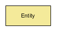
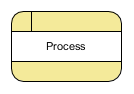
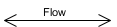
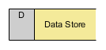
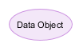
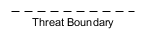
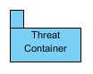
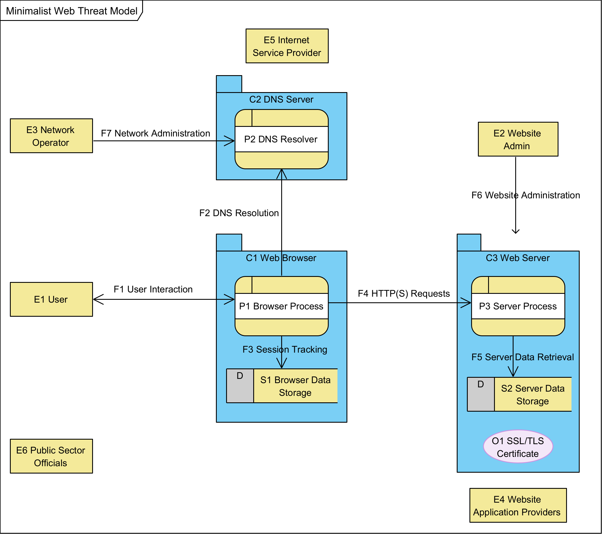

1. Introduction
The mission of W3C is to make the Web work in accordance with the principles of accessibility, internationalization, privacy, and security. Therefore, every standard must also consider security and privacy. This consideration can be made by developing and documenting a threat model for each W3C specification.
Moreover, W3C Process mandates Wide Reviews, which include horizontal reviews described in W3C Guide. Among the horizontal reviews, we also find the security review.
During the security review, a key element is verifying the presence of the Security Consideration Section and the related Threat Model, which not only satisfies security principles but also accelerates the review process.
1.1. Terminology
At the beginning of the threat chain is the threat actor, sometimes called an adversary. The threat actor is the entity from which the threat arises [SWIDERSKI-SNYDER2004]. The threat actor has specific goals and underlying motivations. Understanding these motivations is essential to model correctly. In contrast to threat actors, the term adversary is used to describe vulnerabilities and dangers to users, whether or not a specific person or entity is behind the threat. [ALLEN-APPELCLINE2019] "By anthropomorphizing these threats, we can consider their motivations." Both threat actors and adversaries identify the source of the threat being modeled.
Then there is the threat—a potential circumstance, event, or action that could have a negative impact, e.g., on the user [ISO2022]—which represents a sub-goal of the threat actor [SWIDERSKI-SNYDER2004]. Attack is how the threat is realized [SWIDERSKI-SNYDER2004] and is based on taking advantage of a vulnerability — a weakness in an asset or control that can be exploited [ISO2022] — to achieve a certain impact on an asset which is something valuable [ISO2022], e.g., the elements inside a Threat Model [SWIDERSKI-SNYDER2004]. If the impact hurts assets such as people, it is called harm [ISO2019] or, to simplify, "harm is a threat with its impact" [SHOSTACK2014].
-
Assets: An abstract or concrete resource that a system must protect from misuse by an attacker [SWIDERSKI-SNYDER2004].
-
Attacker: A threat actor or adversary, capable of triggering an attack.
-
Attacks: An attack is a realization of a threat; a particular instance of a threat manifesting in an operational system.
-
Harms: In general, harms can be viewed as the negative impact of a threat, which is the cause. In the case of Harms Modeling, however, the term specifically refers to the negative impact on people [MICROSOFT-HARMS-MODELING].
-
Bug: a bug is an issue in the code, design, or configuration that generates a unusual behavior that could be abused or misused.
-
*Exploit: an exploit is a code or a procedure that allows someone to take advantage of one or more vulnerabilities, and exploitation is the term used to describe this process.
-
Responses: Controls or mitigations that can be (or have been) put in place for specific threats, including the limitations of such responses and accepting threats outside the scope of the specification.
-
Security: Security is considered a function of separation between what we are protecting and the threats. This separation occurs through the application of response strategies (e.g., controls or mitigations) that create a distance between the assets and the threat. This definition is tied to the OSSTMM v3 [OSSTMM3].
-
System: a collection of functionality that can span one or more components (functional areas). A system exposes certain functionality to external entities (interactors outside the system’s control) and must protect one or more assets. [SWIDERSKI-SNYDER2004].
-
Threat: something that, if it happens, has a negative impact.
-
Vulnerability: it is a bug that is potentially exploitable.
1.2. Goals of This Guide
This guide helps specification developers and implementers document and understand the threats facing the World Wide Web, with the explicit goal of improving the security, privacy, and reliability of the Web.
We take a security-first approach, as without reliable security, it is impossible to know if a system is working properly. To evaluate the security of the web (and potential extensions and innovations), we use a threat model to identify what we are evaluating, the threats we have considered, and any known responses to those threats.
It is a goal of this work to update the way the W3C identifies, captures, and communicates the security risks of its technologies, especially by developing reusable, shareable, and extensible threat models for every technology specification developed by the organization.
We provide explicit guidance on performing threat modeling and writing security considerations for specifications developed by the World Wide Web Consortium.
2. What is Threat Modeling at W3C
Threat modeling is a family of structured, repeatable processes that together allow you to make rational decisions to secure applications, software, and systems [SHOSTACK2014]. During threat modeling, potential threats, such as vulnerabilities or the absence of appropriate safeguards, are identified and enumerated, and countermeasures prioritized (OWASP). In general terms, threat modeling is a form of risk assessment that models aspects of the attack and defense sides of an entity (NIST SP 800-53 Rev. 5, NIST SP 800-154).
As a practice, threat modeling has inspired several alternative methods for evaluating threats across various system types. Three worth highlighting are the Security Development Lifecycle (SDL) from Microsoft, Shostack’s 4 Questions from Adam Shostack, and the Auditor’s Trifecta from the Open Source Security Testing Methodology Manual (OSSTMM).
Threat modeling is similar to risk modeling with a slightly different focus. In particular, threat modeling anchors to a particular system under consideration, using a diagram of that system to identify components that are, in turn, evaluated for specific threats. Risk modeling, in contrast, does not require a visual diagram and may identify risks that are, therefore, not necessarily related to any specific component of a proposed system. For example, evaluating the risks associated with an upcoming wedding can be useful without explicitly modeling the different elements coming together to realize the wedding, such as planning software, registries and invitation management systems, vendors, venues, participants, etc. So while risk modeling and risk analysis is often more widespread in its considerations, threat modeling is always anchored to components of a specific system under consideration. The centrality of the diagram aligns well with the central importance of the specifications for which threat modeling is done.
The authors of this guide have found that the diagram itself is often the most critical element in the threat model. Diagramming the system with the intent to identify threats yields a diagram that is itself a better representation for security analysis than those created for other purposes. As such we encourage specification developers to create diagrams specifically for threat modeling.
That difference between threats and risks is less important than their similarity. Any coherent analytical framework of concern may yield quality threats to the secure operation of the system. Our approach at the W3C embraces any analytical framework that specification developers find illustrative, treating risks and threats both as valid concerns. For the sake of simplicity, we simply call these concerns "threats" as our approach is more aligned with threat modeling as championed by Shostack and others, than risk modeling as advocated by PMI and Prince2. This guide provides a common strategy for performing threat modeling using any analytical framework that enables evaluating components for threats and identifying suitable responses.
At the W3C, we ask specification developers to develop a formal threat model to capture known threats and responses of their specification. This guide provides detailed examples and advice for developing an effective threat model, tailored specifically to threat modeling for specifications.
Groups are free to innovate in their approach to threat modeling, as long as three key elements exist:
-
A clear description of the system under analysis, including a visual representation(s) of the components of the system and data flows between them, and a dictionary describing each component and flow. This can be a simplified Data Flow Diagram (DFD) as described in Shostack’s approach, a UML Sequence Diagram that shows the core information flow between components, swimlanes, or any other visual representation that provides adequate context for threat analysis. The point of the description is to introduce terminology for referring to system elements when discussing threats and responses.
-
A discussion of the threats identified by specification developers. Four types of threats should be considered:
-
target threats the specification was designed to address,
-
implementation threats that implementers should consider but which are not covered by the specification,
-
external threats whose resolution is beyond the scope of the specification but that are nevertheless considered worthy of consideration by implementers and
-
dependency threats are external threats that arise from specific pre-requisites or dependencies in the system, such as reliance on CSS or HTTP in a specification that relies on those technologies but does not control them.
-
-
A discussion of responses to the identified threats, describing how implementers could address them. Responses may include actions or controls outside the technology described by the specification itself. For example, a specification that relies on TLS encryption to avoid network surveillance might identify the threat and acknowledge that a working TLS subsystem is an expected response for implementers; it need not directly describe how the TLS subsystem does so.
3. Why Threat Model
We threat model to make the Web better.
Threat models are a medium for technology evaluation and communication. They provide a concrete and coherent perspective on the threats related to a set of technologies. By creating, discussing, and documenting specific threat models, stakeholders can better understand the engineering trade-offs involved in deploying innovative technologies. Often the detail and granularity of specific threats makes it easier for users and stakeholders to understand if their particular concerns are addressed.
At the W3C, Working Groups develop threat models to capture and document threats related to a specification as it is expected to be deployed.
Specifications that define the Web offer significant extensibility and optionality, allowing implementers to make a wide range of choices that affect security, even when 100% conformant to the specification. Often spec developers know about implementation-specific details that pose security or privacy challenges worth considering. Implementation threats describe these kinds of unavoidable decisions.
Dependency threats are particularly important because of the complex landscape of technologies that come together to realize the Web. W3C specifications are necessarily deployed alongside a large family of interdependent specifications maintained by other organizations, such as Ethernet, Wi-Fi, TCP/IP, HTML, ECMAScript, DNS, and TLS. Threat modeling of W3C specifications must appropriately identify threats arising from this complex interplay of independently developed technologies. We cannot "fix" threats arising from these externalities—they are outside the scope of the specification—but we can identify the harms that may result from reliance on certain technologies.
Over time, it is our hope that the constellation of threat models developed for W3C specifications will form a broad-based, coherent set of inter-related documents that together comprise an extensible threat model for the World Wide Web.
By better understanding how W3C specifications address threats of the World Wide Web as deployed, we help make the Web more secure and privacy-respecting for everyone.
4. When to Threat Model at the W3C
Threat models, as described in this guide, should be developed collaboratively by the Working Groups writing specifications, with support from the W3C team and the horizontal groups (e.g., security and privacy groups at W3C), to identify threats.
The threat model should start in parallel with the specification itself, particularly when evaluating use cases and writing introductory explainers. Consider the security implications of the system as described, identifying potential threats as you develop the rest of the story that explains the specification. These threats may be identified when evaluating the system from a use-case perspective, drafting an explainer, or teasing out the trade-offs of specific design choices. Whenever a threat is implicitly involved, threat modellers should capture it. Just as your discussion of relevant use cases evolves as your specification moves from inspiration to recommendation, a discussion of threats should start at the beginning of the process and be updated as discussions and specification text evolve.
Significant threats known at the time of chartering SHOULD be listed in the charter. For security-minded technology, specific threats can be identified early. For example, digital credentials are known to have threats from tampering and information disclosure. If such threats help clarify the scope of the work, they should be included in the charter even through a formal threat model has not been fully developed.
Once the work gets underway, share an updated threat model with horizontal review groups and liaisons as the work develops. As you write the explainer and develop the first public working draft, make sure your threat model work is also under way. The best threat models are living documents that require continuous updates, such as when functionality is modified or new functionality is added (Swiderski & Snyder, 2004, p. 26).
A completed threat model must be prepared before formal horizontal review. A threat model SHOULD serve as the foundation for the security considerations section of the Working Group’s specifications.
If the threat model is small, it can be included directly in the Security Considerations section. Otherwise, it can be published separately (e.g., as a Group Note) and included in the Security Considerations section as an external security note [SHOSTACK2014].
5. How to Threat Model
-
Paint a picture
-
Capture threats
-
Describe responses
The simplest threat model involves three key components.
First, a picture of the system with relevant parts enumerated. This picture, typically an architecture diagram, defines the scope of concern for the threat model. If your concerns include hardware-level considerations, make sure your picture includes the components that are involved. Keep this picture as simple as possible to make it easy to absorb, but don’t leave out components that are related to major threats. In short, it’s the detail in the diagram that lets you discuss the appropriate level of threats. It’s here that threat analysts anchor the model to actual systems either already built or to be build.
Second, given the elements of the diagram, capture threats to the integrity of system operation. As specification developers, you are the closest to both the problems address and problem solved by the specification. Use your own expertise to establish a list of threats that captures the concerns that arise from building consensus for your specification.
Third, for each threat, document options for responding. These responses may be baked into the specification or they may need further work by implementers. Some responses will simply be to accept the threat. Acceptance lets people who share that concern understand that the specification was developed with full knowledge of this threat--and implementers should consider it--but believe a solution is either unknown or unreasonable at this layer in the system.
We dive into each of these later in this guide.
5.1. Threat modeling specifications
For specifications, threat modeling must address both idealized and flawed realizations. Consider the specification’s idealized realization, assuming everything in the specification is implemented correctly. Also consider the consequences of common bugs. Good security will be resilient to common programming errors, as programming errors are inevitable throughout the software development lifecycle and real-world systems must be designed to handle such errors in as graceful a manner as possible. Specification threat models should also be maintained over time, incorporating threats known to arise from common implementation errors and external dependencies.The point of threat modeling specifications is to help implementers understand the security trade-offs inherent in the technology, enabling them to make informed security decisions when implementing the specification.
Downstream, we anticipate that both implementers and security professionals will extend the threat models created by working groups with their own evaluations based on implementation decisions. Such implementation-specific threat models are not expected to be standardized and may be published or not. However, they provide implementers with a coherent way to evaluate the security trade-offs of their applications when integrating the specified technologies.
5.2. Threat Modeling Process
There are different iterative processes for doing threat modeling, but they all use the same basic approach:-
Model the system
-
Identify & Evaluate Stakeholders
-
Identity & Evaluate Threats
-
Consider Responses
-
Publish for consideration
-
Iterate
5.2.1. Model the system
The first step in creating a threat model is asking the question "What are we working on?". Defining the primary use cases and create a diagram that illustrates the system realizing that use case—an "abstract representation of some process" [ONEIL2016]—and diagrams as graphical representations of the model [HOWARD-LIPNER2006] (p. 110).
Creating good diagrams is fundamental, as they are the heart of a good threat model [OSTERMAN2006]. Diagrams should list and describe the various elements that make up the system [OSTERMAN2007]. For computer systems, multiple diagrams are often used: a high-level diagram followed by a series of detailed diagrams that detail the various elements [HOWARD-LIPNER2006] (p. 112).
Include the computational and network contexts that matter to the threat analysis. Ultimately, information systems are realized by software running on hardware, communicating with other systems over networks and with users through interfaces. The model of the system should describe a typical deployment, showing how the specification fits into real-world systems. These system boundaries illustrate flows and elements from which threats might arise.
This is similar to geographical maps. Not only can it be useful to have various levels of zoom, it can be useful to have different information (e.g., satellite images, street map, topographic map) presented in different maps of the same. region. The principle that "the map is not the territory" [KORZYBSKI1933] also applies here [ONOFRI2024-INCLUSION]. We use the diagram, like a map, to understand the system with awareness that the diagram is not the system as it gets deployed. It is a simplification to present specific information about the system Another well-known aphorism, "all models are wrong, some models are useful" [BOX1976], is also used in modeling [FENSTERMACHER2004] to help modelers manage scope by selecting those elements that are most useful rather than chasing perfect correctness. The diagram can never perfectly represent every element of the system; use it to represent the elements of the system that illustrate the most salient security concerns.
Any visualization that clearly distinguishes the relevant elements of the specified system is acceptable.
However, all visual imagery MUST adhere to the W3C Accessibility Guidelines https://www.w3.org/TR/wcag-3.0/, for example:
-
use shapes rather than colors or shading to distinguish different types of elements, and
-
make sure that sufficient context is provided for alternate renderings, e.g., by a screen reader, using ALT tags and ARIA properties.
It is also RECOMMENDED that
-
diagrams enumerate all components with unique short IDs and names,
-
diagrams are accompanied by a prose description of the architecture describing a common use case to give context and explanation for the diagram, and
-
diagrams are accompanied by dictionaries that enumerate and describe the elements in the diagrams. These dictionaries also serve as references in subsequent discussions of threats and responses.
We provide an example in the Appendix 1: Minimalist Threat Model for the World Wide Web.
5.2.2. Identify and Describe the Stakeholders
When modeling the system, it is vital to include all affected stakeholders to answer the question "Who is affected?" or, equivalently, "Who is impacted?" Focus on identifying and analyzing the people, groups, and entities that interact with or are affected by the system modeled in the first step. This work aims to shift the paradigm from viewing the user as an asset to be protected to the "weakest link" of the security chain [SCHNEIER2015] (preface section). Systems that represent only technical components often miss critical threats related to human error and malfeasance. By including both human and legal persons in your threat model, you increase the likelihood of including threats related to both.
In addition to listing the human and legal persons involved in a system, describe each to illustrate how identified threats impact their use of the technology. Specifically, identify the primary goals for each stakeholder to illustrate their primary motivations for building and/or using the technology.
This step is inspired by the harms modeling process described in Microsoft [MICROSOFT-HARMS-MODELING] and is useful for integrating threat modeling with harms modeling.
Identifying stakeholders is particularly useful when analyzing high-level models and technologies that can have a societal impact. A thorough understanding of stakeholders ensures that the resulting systems are not only secure but also trustworthy, recognizing and respecting human rights as a fundamental design principle.
This includes understanding who the stakeholders are, what they value, how they might benefit from the technology, and how they could be harmed by it. Stakeholders typically include, but are not limited to:
-
Customers: direct users or adopters of the technology.
-
Non-customers: individuals, groups, or organisations indirectly affected by the technology’s operation or deployment.
-
Developers and operators: those who design, implement, or maintain the system.
-
Regulators and policymakers: entities establishing or enforcing rules that affect the system’s design and usage.
-
Society at large: communities, environments, and ecosystems influenced by the system’s broader externalities.
To guide the analysis, it is RECOMMENDED to ask the following questions for each stakeholder category:
-
Who are the end users for your technology?
-
What components do they interact with?
-
How should they benefit from your technology?
-
How could your technology harm them?
-
-
Who are the non-user stakeholders?
-
What components do they interact with?
-
How should they benefit from your technology?
-
How could your technology harm them?
-
Asking these questions provides a deeper understanding of what matters to stakeholders and how these values influence their relationship with the product or system. This understanding forms the basis for identifying not only technical threats but also social and cognitive harms, ensuring that threat modeling extends beyond the system’s components to include its human and societal dimensions.
5.2.3. Identify & Evaluate Threats
The second step in creating a threat model asks the question, "What can go wrong?" where threats are identified and assessed [SWIDERSKI-SNYDER2004] (p. 111). Threats can be identified in different ways, such as experimentally, by analyzing the chain of events leading up to an attack—i.e., a kill chain —or by using a list of threats [SHOSTACK2014] (pp. 9, 385, 388) [PENNEY2023]
Threat lists, like other types of lists used in threat modeling, are particularly useful for identifying issues on a diagram. This operation can be performed: "per element" of the diagram, where the analysis starts with the first element and evaluates all threats [OSTERMAN2007A]; "per interaction", where the analysis is focusing on the data flow of the diagram, focusing on the interactions between elements [FFRI2016] (slide 4-5), "per threat", taking one threat at a time and figuring out which element it applies [DISTRINET2024].
We recommend indexing numbered threats in a short form list as a table of contents, with threat details provided in separate tables. You can see this approach in Appendix 1: Minimalist Threat Model for the World Wide Web.
In particular, we recommend against presenting threat lists as large two-dimensional spreadsheets, as this format is often hard to reason over. See the section on curatorial storytelling for additional presentation suggestions.
However, threat modelers are free to use any representation that presents the threats effectively.
5.2.4. Consider Responses
The next step in creating a threat model is to ask the question, "What are we going to do about it?". That is, how are we going to respond to the threats [HOWARD-LEBLANC2002] (p. 106).
In the literature, there are several categories of responses, some specific to threat modeling and others derived from risk management (Appendix A.4), aimed at reducing or eliminating the threat or its impact [HOWARD-LIPNER2006] (p. 124).
For the threat modeling Guide, these can be summarized in four response strategies using the ERTA mnemonics:
-
Eliminate the threat or the asset;
-
Reduce the threat by applying mitigations or countermeasures;
-
Transfer to another entity or element; and
-
Accept the threat; do nothing but acknowledge that the threat can occur.
These four map directly to the four risk responses embraced by the Project Management Institute’s Guide to the Project Management Body of Knowledge: avoid, mitigate, transfer, and accept. We prefer the use of "reduce" instead of "mitigate" because risk responses are often called mitigations in common conversation, even if risk professionals use the more restrictive definitions. Sometimes professionals use these terms with subtly different meanings. For example, Shostack [SHOSTACK2014] uses "mitigations" to discuss any response to a threat, while the PMI defines "mitigations" as one particular form of response. The ERTA set of threat responses avoids this problem. So, as we embrace both "threats" and "risks", we recommend using ERTA.
5.2.5. Publish for consideration
Next, we ask "Did we do a good job?" by publishing the threat model for feedback. Threat models, by their nature, are living documents that require continuous updates [SWIDERSKI-SNYDER2004] (p. 26). Attacks continuously evolve, with new attacks emerging as technology, law, and social expectations change. Publication is vital to give others the opportunity to review and give feedback throughout the lifecycle of the specification and its use.
Some stakeholders worry that publishing a comprehensive set of threats does more to teach our adversaries than it does to protect the system. However, the chance of attackers reading your documentation and changing their behavior is modest at best. "Attackers simply ignore your threat model" [ONOFRI2024-INCLUSION].
In contrast, by socializing a public discussion of the threats inherent in the specifications, there is an opportunity to improve the security of the entire Web, as different components better integrate and support the concerns from other dependent elements to minimize threats.
This step serves as a reminder to pause, publish for others, evaluate the completed work, and determine what still needs to be done. For example, performing formal verification, additional cryptographic checks, and so on.
This consideration SHOULD happen throughout the lifecycle of the specification. The earlier you publish, the earlier you can get feedback about how the model works. It continues after "finishing" the specification, e.g., the publication of a W3C Recommendation, as real-world adoption and use teaches us about additional or more nuanced threats.
5.2.6. Iterate
Once you have a published version of the threat model, engage stakeholders and update the model. The specificity and curation of the most relevant threats will be improved by more parties contributing constructively. Through your working group and horizontal review, invite input and feedback, and integrate that feedback into a better threat model. Bring in external perspectives from expected users of the technology, including both end users and service providers.
The best threat models evolve over time as the threat landscape and our understanding of threats change. We learn new details about potential threats, and new threats emerge constantly.
When possible, update the threat model as the specification evolves, including after publication as recommendation. When revising a specification, whether in a minor editorial change or a major breaking change, consider updating the threat model to reflect new understandings.
6. Curatorial Storytelling
A good threat model tells a good story.
That’s the priority.
The most important factor in the success of threat models is whether or not implementers actually read, understand, and apply them in their implementations. The principles of good storytelling can help.
It’s vital that developers can quickly read and understand the threats they should consider when making engineering decisions. A threat model that is too verbose risks overwhelming readers before they capture the value of the model. Huge tables of hundreds of threats are simply hard to absorb. Instead, carefully chosen and well-ordered threats lead readers through a gradual introduction to the threats they should care about most.
Modelers should focus on the most relevant threats in their work, and order them by priority to enable readers to see the big picture even if they do not have the time and inclination to read the entire document in detail. Pick the most salient threats and present them in an order that makes sense to new readers.
This principle also applies to the diagrams that ground the threat modeling. Identify just those elements that matter to your particular threat model. This requires having an intention about the general scope of the system to be considered. Your diagrams define and illustrate that scope.
For example, web browser devices, like a smart phone, contain dozens of different chips. Modeling the threats of a proposed CSS standard is unlikely to benefit from highlighting the fact that any one of those chips could be compromised in some way at the factory. Developers concerned about hardware security would be better served by creating a dedicated threat model that focuses on how the hardware might be compromised.
Choose the elements that best represent the threats you care about. Ignore the rest.
Focus on threats that either have known responses or are deemed acceptable because it is understood there are no clear alternatives. Abstract threats and "areas of concern" must be further distilled into actionable threats. A threat without a response is not actionable.
Focus on threats that either have known responses or for which a response should be determined. Explicitly accept those threats that are out of scope, to communicate with implementers in case they have an opportunity to address it in their implementation even while the specification does not. Abstract threats and "areas of concern" are best addressed through further distillation into actionable threats for which a concrete response can be discussed.
Readers of threat models seek a coherent presentation of the threats and responses they should consider when implementing the modeled specification. As such, threat models SHOULD NOT be exhaustive lists of everything that might go wrong in a system, but rather SHOULD BE tightly curated sets of threats and responses that illustrate the specification developers' best thinking about threats at the time the specification was written. Any reader of a threat model should walk away with a clear understanding of the real threats people and organizations might face during deployment, along with guidance on how to address them.
As a storytelling exercise, threat modellers should present the most salient threats clearly and compellingly, avoiding overwhelming the reader with extraneous details.
7. How to Write the Security Considerations Section
The Security Considerations section should explain the security issues that implementers should consider when developing and deploying the specification.
It is RECOMMENDED that Security Considerations include a well structured and coherent threat model as described in this Guide. Specification developers may also include additional sections that explore related security issues. In some cases, a threat model, included directly in the specification, may be sufficient. In others, it may be more appropriate to publish a detailed threat model as a separate W3C NOTE, with the Security Considerations briefly summarizing and referring to that NOTE.
While it is not reasonable to expect that a standard be immune to all threats and attacks, it is invaluable for specification developers to consider as many legitimate threats as possible. One purpose of the Security Considerations section is to explain which attacks are known to be of concern and what countermeasures have been, or can be, applied to defend against them.
Appendix 1: Minimalist Threat Model for the World Wide Web
The World Wide Web ("the Web") is built on many different technologies, many of which are independently developed and maintained. This makes threat modeling for the Web a complex challenge (See The Web is Unversioned).
For this threat model, we think about the World Wide Web as just nince independent components: three human (user, website admin, and network operator), three in software (a browser, a DNS server, and a web server), and three legal persons (Website Application Providers, Internet Service Providers, and Public Sector Officials). This is an intentionally simplified view of the web so that we can focus on the threats inherent in a minimal instantiation of an TLS-secured World Wide Web as an illustration of how to threat model. It is our hope that this work catalyzes a broader, more extensive threat modeling effort that eventually can be used in earnest to improve the security of the web.
A1.1 Visual Language
We use an intentionally simplified Data Flow Diagram (DFD) inspired by Adam Shostack [SHOSTACK2014], which uses just six elements for clarity: external entities, processes, flows, data storage, data objects, and threat containers (which define threat boundaries). Shostack’s model did not include data objects, but with the rise of digital credentials, system designers now have means for security individual data objects, making them first class citizens that can travel across threat boundaries while retaining integrity.
| External Entity (E) | An autonomous entity, external to the application, that interacts with, or drives, processes. Preferably a human user or legal person responsible for driving an interaction. Include all stakeholders, including the primary user as well as others who have designed roles in the system. Do not include attackers as they are treated as independent factors, exogenous to the model. In particular, be careful about over-characterizing attackers as it is impossible to cover all possible attacks and attackers. Assumptions about the limits of attacks and attackers can leave you open to unforeseen vulnerabilities. In contrast, we can completely characterize the system under attack in a visual diagram, no matter the nature or intention of any attacker. |
 |
|---|---|---|
| Process (P) | A process within the system (e.g., feature in a component, component in an application, application in an operating system, operating system in a virtual machine). |
 |
| Flow (F) | The mechanism by which data flows between elements. May be uni- or bi-directional. Data can flow between an external entity and a process, between one process and another, or between a process and a data store. |
 |
| Data Store (S) | A medium for retaining information. This may be generic (e.g., local filesystem) or specific (e.g., configuration table in a database). It might be ephemeral, like a cache, or more permanent, like an archive. |
 |
| Data Object (O) | A self-contained data object shared over data flow or stored in a data store. Transferrable between elements without losing integrity. Often secured by cryptographic signature. |
 |
| Threat Boundary (B) | A boundary separating trust domains, where each trust domain is controlled by a single authority. When a threat boundary defines a closed loop, it defines a threat container. |
 |
| Threat Container (C) | A collection of elements secured by a common authority. Elements within a container are taken to be operating within a threat boundary. Communications into or out of a threat container are recognized as crossing a threat boundary. |
 |
A1.2 Data Flow Diagram for Minimalist Web Threat Model

A1.3 Data Flow Description
For this diagram, consider the simplest realization of the world wide web including DNS and TLS.
In the intended use, a user (E1) interacts (F1) with a browser process (P1), which operates in its own container, the web browser (C1). This interaction directs the browser to display a specific URL as selected by the user. The browser process (P1) starts by resolving the domain name of that URL by requesting DNS resolution (F2) from a DNS resolver (P2), which returns an IP address for HTTPS requests to that domain. This information is tracked as session data (F3) and stored in browser data storage (S1). Then, the browser sends HTTPS requests (F4) to a server process (P3), which is running in its own container, the web server (C3). These requests (F4) are encrypted using TLS protocols. In response to requests (F4), the web server returns an TLS certificate (O1) and the resource requested, using its own server data storage (S2) to generate an appropriate response.
Supporting this operation are the Website Administrator (E2) and the (E3) Network Administrator, who keep the network-available services running.
Additional stakeholders include the legal entities running websites (E4 Website Application Providers) as well as those legal persons running Internet infrastructure (E5 Internet Service Providers). Finally, public servants of various kinds have both legitimate interests in making sure everything is running according to the law and public policy (E6 Public Sector Officials).
note:We do NOT model potential attackers, as over-characterizing attackers can lead to analysis bias that is better avoided.
It is understood that the browser process (P1) is likely realized as multiple processes running as software in an operating system on a device. Threat modeling for such details would suggest breaking both the process and its container (C1) into its subcontainers and processes, identifying the flows between each. However, in this threat model, we treat the web browser as just two elements, the browser process and its data storage.
Similarly, the web server (C3) is often realized not only as multiple processes, but often with data flows that communicate with multiple back-end systems in response to user requests. However, it is possible to realize the web server as a single process in a single container with its own local storage, which contains its TLS certificate. For our analysis, we choose this minimalist realization.
The DNS resolver also depends on external data flows that are beyond the scope of this threat model.
We treat the DNS Server and the Web Server as essentially black box elements which provide information in response to requests, but whose internals are intentionally outside the threat model. We are not evaluating the threats of the DNS system. Nor are we evaluating the threats of any particular back-end system or web server. These are external systems which may be worth noting as sources of threats, but whose definitions are beyond this scope.
A1.4 Data Flow Dictionary
Elements of Minimalist Web Threat Model| ID | Name | Type | Description |
|---|---|---|---|
| E1 | User | Entity | The user of the Web. Designed for human users, this role can also be realized by automated software, including scripts and AI. However, we consider the user as a black box without regard to the type of user or the subprocesses and data that might be used internally. Users control a user-agent, aka a browser, for interacting with the World Wide Web. |
| E2 | Website Administrator | Entity | The administrator of the website. Their goal is to keep the website running as intended by the website owner. It may be presumed that they have complete access to everything on the server and can monitor or manipulate all communications into and out of the website. |
| E3 | Network Administrator | Entity | Any number of network administrators who keep the network running, including maintaining an operational DNS system. In practice, this party also has the ability to watch and manipulate activity on its services. |
| C1 | Web Browser | Container | The collection of processes and data that realize the web browser for an individual user. Typically running in an operating system on a device, potentially alongside other processes, possibly with different threat boundaries. In this threat model, the browser is simplified to just a single process and single data store. |
| C2 | DNS Server | Container | The collection of processes and data that perform DNS resolution. Typically running as a service on a server somewhere, we treat it and any back-end networking as a black box that simply turns domain names into IP addresses. |
| C3 | Web Server | Container | The collection of processes, data, and data objects that perform the server role in browser interactions. Typically running as a service on a server somewhere, we treat any sub-process architecture and back-end data flows as a black box that simply responds correctly to properly formed HTTPS requests using its own data store (S2) and data object (O1). |
| P1 | Browser Process | Process | The running algorithm that processes user interaction (F1) to engage with resources requested (F4) from different web servers (C3) using its own data storage (S1) to present a coherent browsing experience. |
| P2 | DNS Resolver | Process | Returns the IP address for interacting with a provided domain. |
| P3 | Server Process | Process | The running process that receives and responds to HTTPS requests, providing resources for display or use by web browsers. |
| F1 | User Interaction | Data Flow | User input and display, for controlling the browser and viewing the web. |
| F2 | DNS Resolution | Data Flow | Requests to turn a domain name into an IP address. Response includes the IP address. |
| F3 | Session Tracking | Data Flow | Management of current browser sessions to keep track of TLS meta-data and related information. |
| F4 | HTTPS Requests & Responses | Data Flow | Requests from the browser to the server and their responses. |
| F5 | Server Data Retrieval | Data Flow | Requests from the server process (P3) to server data storage (S2) for information needed to respond to HTTP requests. |
| F6 | Website Administration | Data Flow | To set up and maintain the website, administrators engage in a number of activities, with data flows in both directions. Assume the website administrator has unlimited access to the website system. |
| F7 | Network Administration | Data Flow | Like Website administrators, network operators engage in a number of data flows to set up and maintain the network, including running DNS servers. Assume the network administrator can see and manipulate anything on the network unless explicitly secured in some manner. |
| O1 | TLS Certificate | Data Object | Digital object that allows systems to verify the identity & subsequently establish an encrypted network connection to another system using the Transport Layer Security (TLS) protocol. |
From this diagram and its dictionary, we can begin to model relevant threats.
A1.5 Stakeholders
A1.5.1 E1 User
The user of the Web. Designed for human users, this role can also be realized by automated software, including scripts and AI. However, we consider the user as a black box without regard to the type of user or the subprocesses and data that might be used internally. Users control a user-agent, aka a browser, for interacting with the World Wide Web.
Users include just about any human on the planet using web technology to realize their own goals. This includes your healthy, wealthy consumer with the latest technology as well as members of vulnerable populations in challenging situations where accessibility and connecting might be a challenge.
These users' shared goal is reliable access to web-based services. Those services should operate as intended and the information they receive through their browser should be as the website provider intended.
A1.5.2 E2 Website Administrator
The administrator of the website. Their goal is to keep the website running as intended by the website owner. It may be presumed that they have complete access to everything on the server and can monitor or manipulate all communications into and out of the website.
The goal of website administrators is for their website to deliver authentic services over the network without interference such that interactions with end-users are faithfully engaged in both directions, from the browser through the network to the server and back. They want confidence that the end-user is experiencing the application that they developed without interference during communication. Finally, they want the input from users to be unadulterated and timely.
This includes all parties with authority to affect the website, including developers and customer support.
A1.5.3 E3 Network Administrator
Any number of network administrators who keep the network running, including maintaining an operational DNS system. In practice, this party also has the ability to watch and manipulate activity on its services.
These individuals work for Internet Service Providers and enterprise network operations. They keep the network running. That includes defending the network against any attackers, including denial of service and person-in-the-middle attacks. As the guardian of the network, these individuals often need to view data that could be used maliciously by malicious parties.
The goal of network administrators is visibility and control over the parts of the network they control, and reliability and integrity for the parts of the network they don’t.
A1.5.4 E4 Website Application Providers
Web application providers fund and maintain websites that provide services to end-users. These include for-profit organizations, whose offering necessarily supports their money-making agenda, as well as mission-driven public-sector and non-profit organizations for whom the website may serve a social benefit other than profit generation.
The goal of website application providers is to be reliably available to their constituents and to realize their intended functional goals, such as selling products or managing conversations. Focused on just their own applications, these providers rely on the Web as a medium for interacting with their customers and stakeholders.
A1.5.5 E5 Internet Service Provider
Internet Service Providers (ISPs) deliver infrastructure services such as connectivity, hosting, and specific network components such as DNS hosting and registration, email services, as well as dynamic DNS and TLS certificates.
These parties need the network to keep running, resilient to attacks that would disrupt operations. While they are often considered “utility” providers whose offerings are best appreciated when they are most invisible.
The goal of Internet service providers is for users on both ends of the network (end-users and services) to be able to reach the other end, as designed and implemented by application providers. Hosting providers want their clients' websites to stay up and be available in a reliable way; connectivity providers want their clients to have reliable, uninterrupted, and unfettered access to the services (or users) they want to reach online.
A1.5.6 E6 Public Sector Officials
Public sector officials include law enforcement, elected officials, and regulators seeking to oversee public interests in our digital communities.
Unfortunately, the Web doesn’t have specific oversight roles for public sector officers. The protocols and specifications of the World Wide Web do not specifically give capabilities to different parties based on their status or role in society. Nevertheless, these entities have jobs to do, whether it is enforcing privacy regulations or investigating a murder.
While too much public oversight can constitute undesirable surveillance and abuse of power, specification developers and implementers should consider threats posed both *by* public sector entities and *to* public sector interests. For example, subpoenas and other legal mechanisms can force website providers to reveal information otherwise secured by technical means. In some use cases, this may be important for security and privacy considerations.
The goal of public sector officials is to ensure that rules and regulations are being followed in their jurisdiction so that legitimate services can be securely accessed by appropriate persons wherever and whenever that might be. This includes preventing fraud, illicit sales, and privacy harms.
A1.6 Threats
The following sections describe the identified threats and potential responses to them.
Threat Index
- Target Threats
- Imposter Websites (URL validation)
- Network Surveillance (DH, Encryption)
- Network Corruption (MAC signature)
- Fraudulent Certificate (Signed Certificates)
- Implementation Threats
- Key Compromise
- Library Compromise
- External Threats
- Quantum Cryptography Attacks
- Harvest Attacks
- Flawed Cryptosuite
- Dependency Threats
- The Internet protocol suite (TCP/IP)
A1.6.1 Target Threats
The TLS addition to the Web specifically addressed a handful of known problems.
- Imposter Websites (URL validation)
- Network Surveillance (DH, Encryption)
- Network Corruption (MAC signature)
- Fraudulent Certificate (Signed Certificates)
Threat T1. Imposter Websites[Threat Index] |
| It’s possible for a compromised network to return content that does not come from the owner of the domain. The user requests a given URL, but what is returned comes from an attacker on the network pretending to be that website. |
| Response R1. Third Party Identifying Certificates [Reduce] |
|
TLS certificates inform users of the public key associated with a given domain, as cryptographically attested by a signing authority, called a Certificate Authority (CA). By comparing the domain in the certificate with the domain in the URL and verifying the network session is established using the public key in the certificate, verifying parties gain confidence that the TLS communications are with the intended party. Some CAs provide further assurances regarding the entity identified in the
certificate such as a legal name. However, not all CAs perform the same
validation processes, making the certificates primarily an attestation of
URL validation (that the cert holder has proven legitimate control over the
domain) and not much more. Finally, individual websites can self-attest with a self-signed TLS certificate. Distinguishing between self-signed and those signed in accordance with the CA hierarchy rooted in web browsers is easy. We consider self-signed TLS certificates only "identifying" in terms of the current session, as the website could change the certificate as frequently as desired. In contrast, third party certificates give at least one other party who attests to the legitimacy of a particular certificate for a particular domain. |
| Affected Components: F4. HTTPS Requests, O1 TLS Certificate |
| Analysis Framework: STRIDE (Spoofing) |
Threat T2. Network Surveillance[Threat Index] |
| With traditional HTTP interactions, it is possible for network observers to read the content of the request and any responses. Data sent in either direction, e.g., bank details shown to the user AND user input provided in web forms, can easily be captured and used by an attacker anywhere along the path through the network. |
| Response R2. TLS Handshake [Transfer] |
| Before any data is exchanged, the client and server perform a Diffie-Hellman key exchange to establish session keys that cannot be seen by network observers. These keys are used to encrypt the balance of HTTPS exchanges so that the actual data shared (in both directions) is secured from outside observers. |
| Affected Components: F4. HTTPS Requests |
| STRIDE (Information Disclosure) |
Threat T3. Network Corruption[Threat Index] |
| It is possible for data to be corrupted in transit, either intentionally or accidentally. |
| Response R3. Integrity Check [Reduce] |
| All payload messages sent via TLS are signed with a message authentication code (MAC), ensuring the recipient can verify the MAC to ensure the integrity of the data. |
| Affected Components: F4 HTTPS Requests & Responses |
| Analysis Framework: STRIDE (Tampering) |
Threat T4. Fraudulent Certificate[Threat Index] |
| The TLS certificate provided by a website could be faked. |
| Response R4. Signed Certificates [Reduce] |
|
TLS system relies on cryptographic signatures to ensure that the TLS certificate is not manipulated in transit from the website to the web browser. It is important to note that while the signature ensures the certificate has not been manipulated, the signature says nothing about the truthfulness of the contents of that certificate, which must be addressed at a different layer, e.g., with a hierarchy of certificate authorities with explicit trust relationships. |
| Affected Components: O1. TLS Certificate |
| Analysis Framework: STRIDE (Spoofing) |
A1.6.2 Implementation Threats
Threat T5. Key Compromise[Threat Index] |
| Any time a server relies on private keys for cryptographic operations, the security of those keys is a critical feature of the system. Compromising those keys would allow an attacker to perform cryptographic operations that are not authorized by the legitimate owner of the website. For HTTPS, that would allow malicious websites outside the owner’s control to present a false TLS secured website that would appear to be legitimate. |
| Response R5. Hardware Security Modules (HSMs) [Reduce and Transfer] |
|
Hardware Security Modules (HSM) allow for isolation of cryptographic keys from the processes that rely on them, by exposing a limited set of cryptographic functions operating on private keys that, by design, can never leave the HSM. It’s worth noting that while HSMs do reduce the attack surface for keys,
they don’t eliminate it. The chips, the device, and the platform software
must all correctly and use the HSM such that different applications cannot
inappropriately trigger cryptographic services using keys created for other
purposes. This shifts the burden from the application developer to the
platform provider, which is considered a healthy improvement given the
natural alignment of incentives—the platform provider wants their
platform to be trusted—and the shared value by providing that
capability to all applications rather than requiring each application to
secure its own keys. From a risk perspective, some of the threat is reduced (keys are not used in shared processes or memory) and some of it is transferred to the HSM. |
| Response R6. Hardware Wallets [Reduce] |
|
Hardware wallets isolate keys to separate devices, often accessed via USB. This ensures that the application platform cannot access the private keys even if they wanted to. Typically such devices are significantly restricted in functionality, without the ability to perform risky operations like sending and receiving messages over the network or installing complex applications that run simultaneously.
A key feature of hardware wallets is establishing that an appropriate human is in the loop for all cryptographic operations. While a user might be conned or coerced into authenticating into their device and authorizing erroneous signatures, it is not possible for the platform to trigger services without appropriate user involvement. Some platforms only check for a live human, e.g., FIDO 2FA, while others use PINs or biometrics to ensure the human is explicitly authorized to use that device. |
| Affected Components: C3 Web Server (An HSM would add a component the webserver interacts with) |
| Analysis Framework: STRIDE (Elevation of Privilege) |
Threat T6. Library Compromise[Threat Index] |
| Whether developed internally or licensed from others, reusable code libraries might be compromised by an attacker. This includes both dynamically linked and statically linked components. |
| Response R7. Open Source Libraries [Transfer] |
|
"Many eyes" is a cryptography principle that the more experts you have able to evaluate and test a system, the more likely it is to identify its flaws. Open
source projects enable anyone to view the code for a given library, increasing the likelihood that any given flaw might be found and fixed. This includes licensing internally developed code under an open source license to enable customers and collaborators to evaluate and report on potential compromises. |
| Response R8. Test Suites [Reduce] |
| Test suites let you verify the codebase works as intended for a particular set of test vectors. While no set of tests can guarantee the library is not compromised, libraries with good coverage in their tests are more likely to identify and fix compromises at the repo before any developers download the library. |
| Affected Components: P1. Browser Process, P2. DNS Resolver, P3. Server Process |
| Analysis Framework: STRIDE (Tampering) |
A1.6.3 External Threats
Threat T7. Quantum Cryptography Attacks[Threat Index] |
| It is expected that it is only a matter of time until the current preferred cryptographic primitives are rendered irrelevant because quantum computers can solve cryptographic problems that are unfeasible on traditional Von Neumann architectures like those used in nearly all production computational platforms today. |
| Response R7. Quantum-secure Cryptography [Reduce] |
| Although not yet standardized (and perhaps not even proven), there exist algorithmic approaches that are believed to be resilient to quantum cryptography attacks. In the US, NIST already recommends using such algorithms where possible. |
| Response R8. Extensible Cryptography [Transfer] |
|
For quantum threats, extensible cryptography allows systems to adopt new standards. For ineffective cryptosuites, extensible cryptography allows systems to swap out compromised technologies. This is done by providing an explicit mechanism for specifying and using cryptographic approaches not yet standardized with minimal retooling. If the API is flexible, implementers can move more quickly to adopt next-generation capabilities as they become available. By transferring the threat to future extensions, developers can later address the threat through new technologies, when and if those technologies become available. |
| Affected Components: F4. HTTPS Requests |
| Analysis Framework: STRIDE (Tampering) |
Threat T8. Harvest Attacks[Threat Index] |
| Breaking cryptography is essentially a matter of time, either the time it takes traditional computers to guess the right key or the time it takes for quantum attacks to render current cryptography irrelevant. The result is a category of attacks described as "harvest now, crack later", which allow an attacker to gather encrypted network traffic now for decrypting later. |
| Response R9. Forward Secrecy [Reduce] |
|
Forward secrecy (sometimes called "perfect forward secrecy") assures that short-lived session keys cannot be compromised just because the long-term secrets used to create those keys are themselves compromised. Frequently changing the session keys in these systems means that each session is an independent cryptographic assurance that must be compromised independently. Compromising a root secret no longer gives the attacker access to the entire collection of harvested data.
In TLS, forward secrecy is realized by initiating a Diffie-Hellman key exchange to establish unique keys known only to the client and server and used just for that session. Even if one were to compromise the root key in the TLS certificate, the actual communications channel remains secure. Encrypted communications and sessions harvested in the past cannot be retrieved and decrypted if (when) the long-term secret keys are compromised in the future, even if the adversary actively interfered (e.g., via a man-in-the-middle attack). |
| Affected Components: F4. HTTPS Requests |
| Analysis Framework: STRIDE (Information Disclosure) |
Threat T9. Flawed Cryptosuite[Threat Index] |
| The suite of functions that implement cryptographic primitives can contain errors that enable an attacker to exploit idiosyncrasies at either the algorithmic or implementation layer. |
| Response R10. Open Source Cryptosuites [Transfer] |
| "Many eyes" is a cryptography principle that the more experts you have able to evaluate and test a system, the more likely it is to identify its flaws. Open source projects enable anyone to view the code for a given cryptosuite, increasing the likelihood that any given flaw might be found and fixed. |
| Response R8. Extensible Cryptography [Reduce] (reused response) |
| For quantum threats, extensible cryptography allows systems to adopt new standards. For bad cryptosuites, extensible cryptography allows systems to swap out compromised technologies. This is done by providing an explicit mechanism for specifying and using cryptographic approaches not yet standardized with minimal retooling. If the API is flexible, implementers can move more quickly to adopt next-generation capabilities as they become available. |
| Response R10. Vetted Standards [Reduce] |
| Cryptosuites sometimes have flaws in the fundamental algorithms. One well-worn response to this problem is rigorous testing and evaluation performed by national standards bodies like NIST in the US and ENISA in the EU. To a lesser extent, voluntary standards bodies like ISO, IETF, and the W3C also publish vetted cryptographic standards. The standards endorsed by these organizations are more likely to be robust compared to software developed in-house or through informal collaboration and open-source licensing. |
| Affected Components: P1. Browser Process, P3. Server Process |
| Analysis Framework: STRIDE (Spoofing) |
A1.6.4 Dependency Threats
Threat T10. The Internet protocol suite (TCP/IP)[Threat Index] |
|
A secure Web relies on a large family of interrelated components, commonly
referred to as the Internet Protocol Suite, plus web content standards. The
specifications that affect usage discussed in this threat model include
BGP, DHCP, DNS, HTTP, HTTPS, TLS, X.509 TCP, IP, ARP, PPP, MAC, HTML, CSS,
ECMASCRIPT, CORS, Wi-Fi, and Ethernet.
This threat model is an intentionally simplified example, leaving a more thorough analysis to be addressed on a specification by specification basis. |
| Response R11. Threat Model Dependencies [Transfer] |
| Implementers should investigate the threat models of related technologies to fully understand the scope of potential threats to the Web. In particular, consider spoofing of credentials, tampered resources, surveillance on the network, and routing failures. |
| Affected Components: F2. DNS Resolution, F4. HTTPS Requests |
Appendix 2: Threat Analysis Frameworks
Every threat is a result of thinking about the system in a particular way. Several different analytical frameworks have been developed to help think about software and software systems in terms of harms, threats, and risks. Each framework inevitably defines its own terms, which together provide a coherent way to think about threats, but which might introduce term confusion. For example, "repudiation" means different things in the STRIDE framework than in LINDUN. To understand the vocabulary, it is helpful to anchor it to a particular framework.
At the W3C, we consider all variations of "threats" to be suitable for inclusion in a threat model, even if the source framework calls threats by a different name, with different nuance. This opens the aperture for threat modeling to any domain of concern the work group wants to consider. In fact, working groups should use whatever analytic frameworks most coherently describe the threats they are most concerned about.
Frameworks worth considering:
-
Security Threats (STRIDE)
-
Security Attacks (RFC 3552)
-
Security/Privacy/Trust Controls (OSSTMM)
-
Privacy Threats (LINDDUN)
-
Privacy Threats (RFC 6973)
-
Privacy/Security Threats (W3C Self-Review Questionnaire: Security and Privacy)
-
Harms (Microsoft)
-
Human Rights Considerations (RFC 9620)
Appendix 3: Related Publications
-
Threat model for Web (API?)
-
W3C Security & Privacy Questionnaire
-
W3C Fingerprinting Guidance
-
W3C Security Guidance on Cryptography
-
File Format Threats Mnemonics